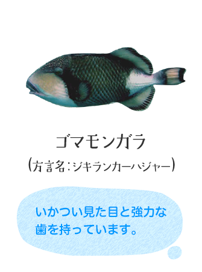
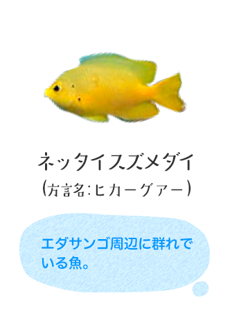
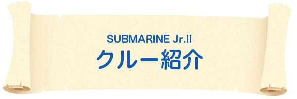
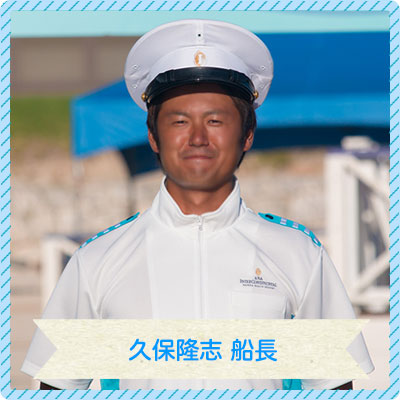
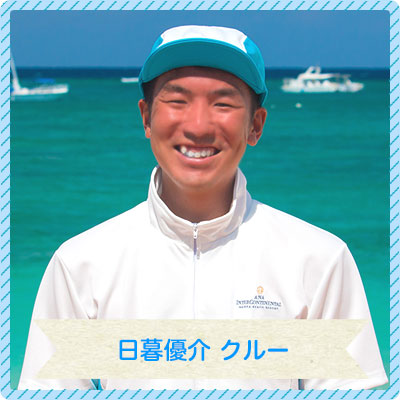

初代のSUBMARINE.Jrは、1988年に導入以来27年間に渡って、
当ホテルのマリンレジャーの顔として、広く認知され人気を博してきました。
そのSUBMARINE Jr.に代わって、新艇SUBMARINE Jr. IIが万座にやってきました！


| 船 名 | サブマリン Jr. Ⅱ | 進水年月日 | 平成27年7月7日 |
|---|---|---|---|
| 全 長 | 約13.45ｍ | 全 幅 | 5.00ｍ |
| 深 さ | 2.60ｍ | 総トン数 | 約17トン |
| 最大定員 | 船客：44名／船員：2名 | 連続最大出力 | 128kW×2基 |
| 常用速力 | 約5ノット | 最大速力 | 9ノット |
※方言名は地域により異なります。


- 

- 



船長歴2年。豪快なドロップオフの地形をお楽しみください。回遊魚の群れに出会うこともありますよ。
船長歴15年。大きく快適になったサブマリンJr. II。乗船後にゲストから『楽しかった。』と言われることが何よりもうれしいです。
- 
船長歴2年。大きく広くなった船内にはモニターもあり、たくさんの方にお楽しみいただけるようになりました。
船長歴20年。さらに海中が見やすくなったサブマリンJr. IIできれいな万座の海をお楽しみください。
船長歴5年。水に濡れずに、シュノーケルやダイビング気分が味わえます。
見どころは湾内から沖へ向かう時の海の色の変化、沖のコーラルポイントの地形と色とりどりの魚たち。
サブマリンJr. IIのクルーをしているおかげで魚の知識が増えました。
サブマリンJr. IIは横に窓が付いていて快適。お客様が楽しそうに海中を見ているとうれしくなります。
魚への餌やりが楽しいですよ。運が良ければウミガメを見る事も出来ます。
- 
日によって見れる魚が違うので、毎日乗っていても飽きることがありません。サブマリンJr. IIでは魚の餌やりがお勧めです。

Copyright© ANA INTERCONTINENTAL Manza Beach Resort. All rights reserved.